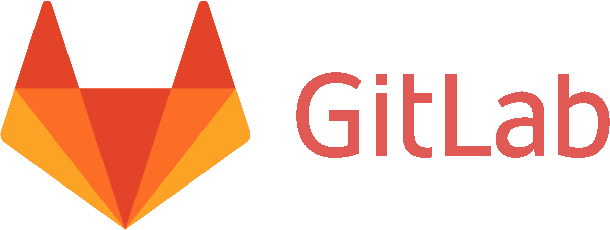

About
Siamo tre studenti di ingegneria informatica dell'università La Sapienza di Roma.
Questo sito è stato sviluppato per il progetto
del corso "Sistemi operativi"
Contatti:
Grieco Antonio:
antonio_grieco.96@hotmail.it
Nardocci Andrea:
nardomen96@gmail.com
Milani Stefano:
stefano.milani96@gmail.com
Repository git:
